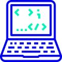

Un podcast que explota el mundo de la programación. Nuevos episodios todos los jueves cada 15 días.
Hello
world
pale blue dot
.
Episodios
De dónde venimos
Our posturings, our imagined self-importance, the delusion that we have some privileged position in the Universe, are challenged by this point of pale light. Our planet is a lonely speck in the great enveloping cosmic dark. In our obscurity, in all this vastness, there is no hint that help will come from elsewhere to save us from ourselves.
Invitadas/os estelares
Algunos de nuestros temas
Trabajo remoto
Repensando la programación
